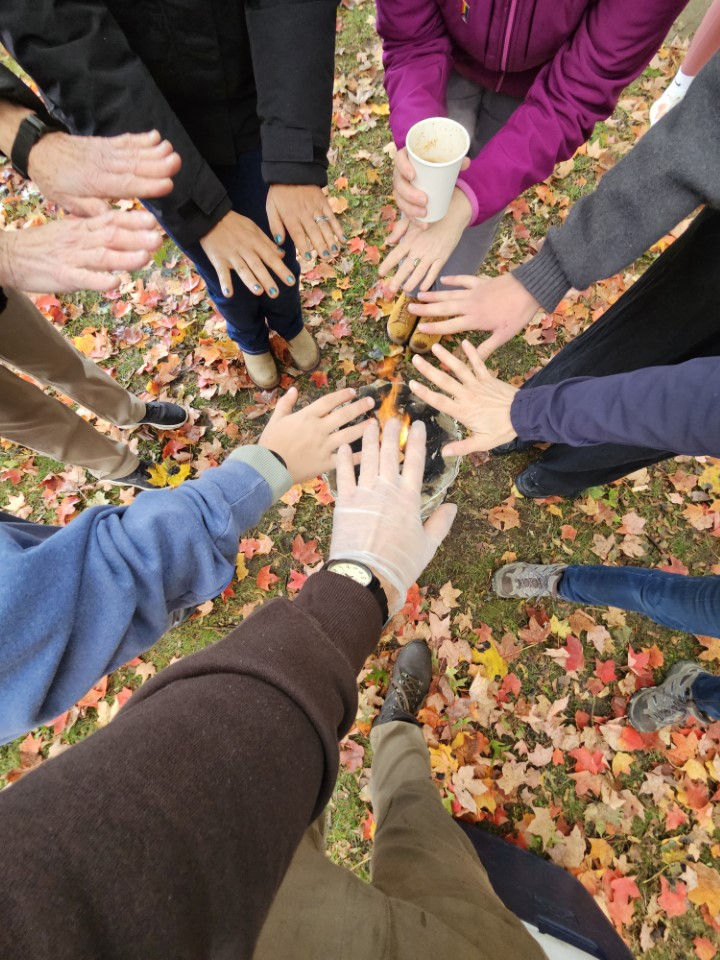
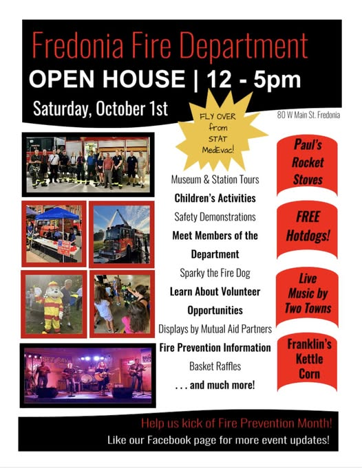
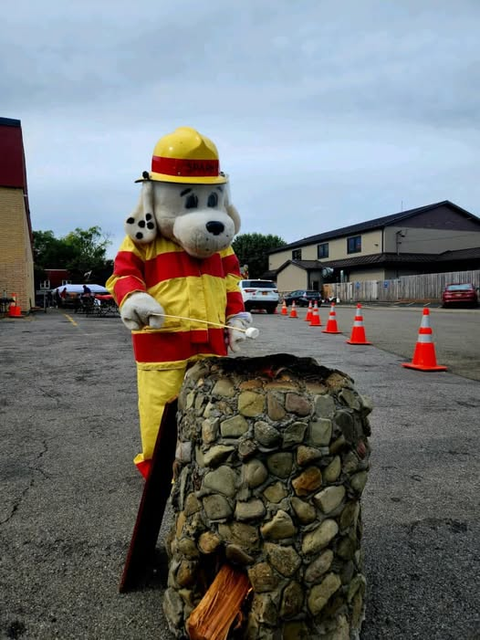
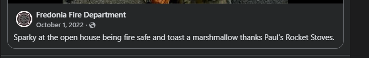
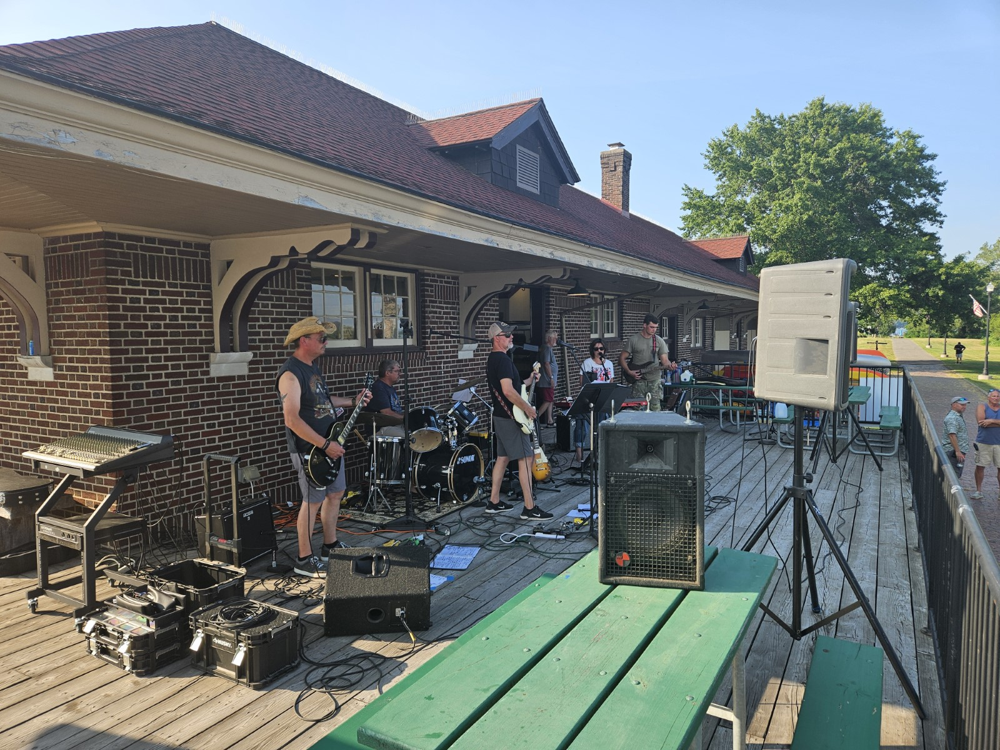
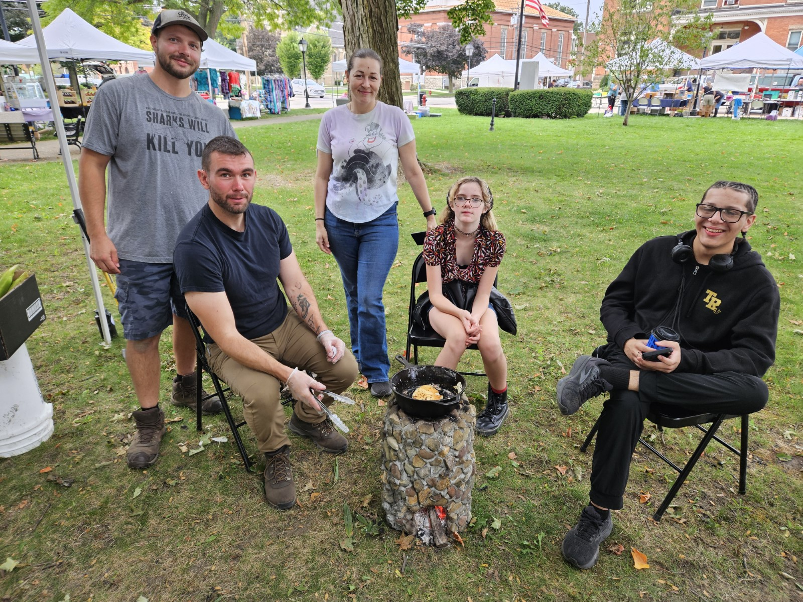
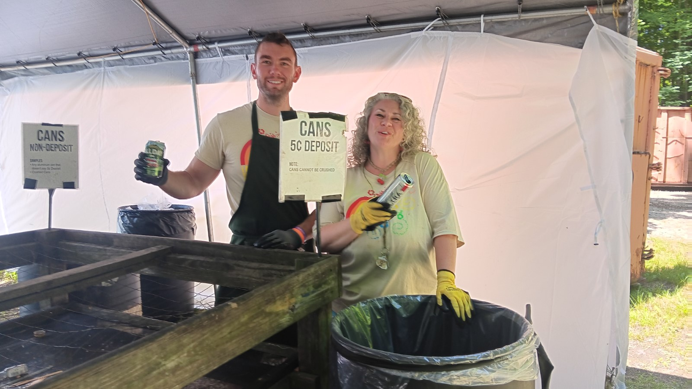
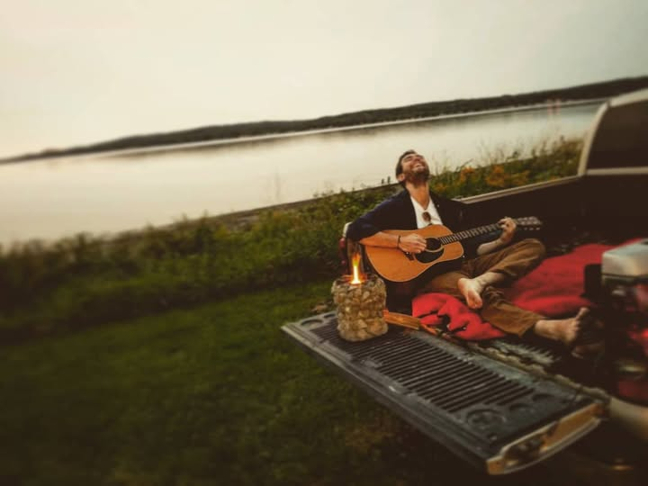
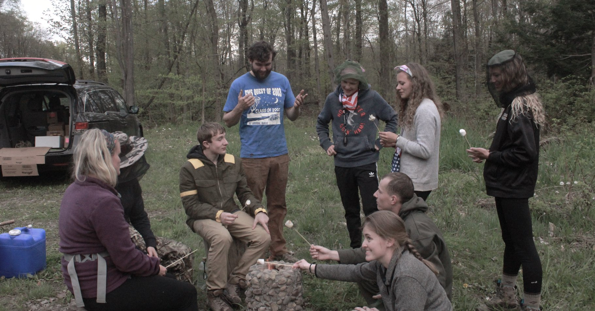

More Volunteering
A list of miscellaneous activities I have volunteered to engage in.
-
Community cleanup at Barker Commons Park (c2019)
-
Helped organize Fredonia Farmers’ Market fire safety demo

-
Fredonia Fire Department Open House – Rocket stove safety demo



-
Assisted Todd with live audio engineering

-
Continued community demos through Paul’s Rocket Stoves

-
Helped Bill Kuwik with greenhouse clearing
-
Recycling Team – Great Blue Heron Music Festival

-
Learned and played songs for people on guitar and piano

-
Teaching Fredonia Quest students about rocket stoves

- Elected to the Fredonia Farmers’ Market Board of Directors
- Completed internship with Innovative Digital Transformation (IDT)
- Supported local bakery with facility maintenance
- Supported my mother with household maintenance after father’s passing
- Studied and earned Security+ and AWS certifications
- Removed obsolete rooftop satellite antenna
- Installed thermostat and moved doors at Airbnb
- Returning to school for A.A.S. in IT while working full-time
- Rocket Stove Business (paulsrocketstoves.com)
- Equipment Room Process Improvement
- Rally Speech at Village Hall
- Original Album Release and Promotion
- School Radio Show Leadership
- Volunteer Work: Soup Kitchen
- Volunteer Work: Directing Traffic
- Bookshelf Building
- Asset Recovery and Inventory Management
- Secured Grant-Paid Intern (Twice)
- Trained and Supervised Interns and Employees
Back to Projects Extended